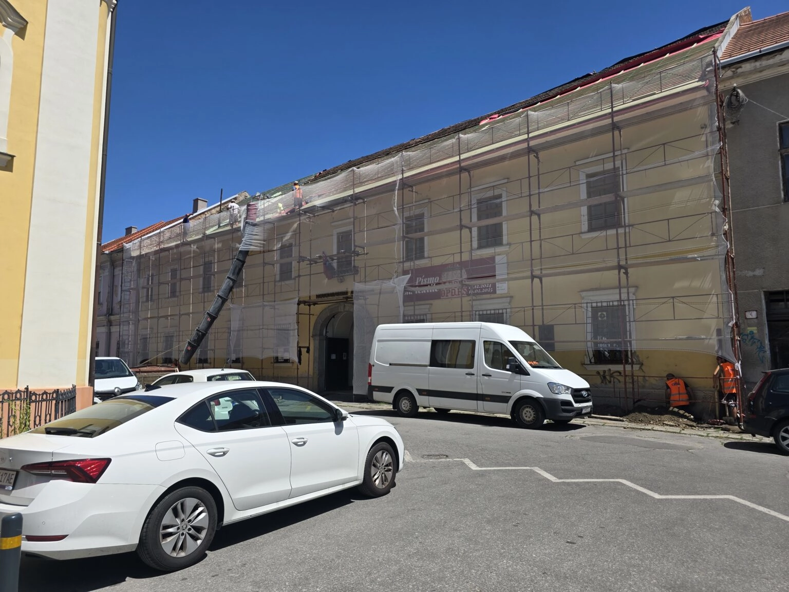

Návrh 02 · Domovská stránka
Štýl sekcie „Realizované projekty“
Karta projektu dnes nesie sedem samostatných vrstiev naraz — rámik, sivé pozadie, štítok kategórie na fotke, štítok lokality na fotke, riadok s rokom, popis a dvojstĺpcovú tabuľku. Všetko súťaží o pozornosť a fotka realizácie, ktorá má predávať, dostane najmenej priestoru. Tri varianty nižšie riešia to isté inými prostriedkami — všetky ostávajú v existujúcom systéme: ostré rohy, čierna a jantárová, monospace mikro-popisky.
Stav: neaplikované — iba návrh
Porovnanie karty · 1440 px
Rovnaký projekt, rovnaké dáta, štyri spracovania vedľa seba.
TerazSúčasný stav
 Občianske stavby
Detva
Občianske stavby
Detva
Rok 2026
Zariadenie sociálnych služieb Detva
Realizácia zariadenia sociálnych služieb vrátane inžinierskych sietí, opornej steny a spevnených plôch.
Sedem vrstiev na jednej karte. Fotka je nízka, rámik a sivé pozadie ju tlačia dozadu.
ARedakčný
Zariadenie sociálnych služieb Detva
Realizácia zariadenia sociálnych služieb vrátane inžinierskych sietí, opornej steny a spevnených plôch.
Bez rámika a bez sivého pozadia. Fotka vyššia o polovicu, všetky štyri údaje v jednom riadku pod vlasovou linkou.
BTmavý katalóg
Zariadenie sociálnych služieb Detva
Detva · Rok 2026
Realizácia zariadenia sociálnych služieb vrátane inžinierskych sietí, opornej steny a spevnených plôch.
Sekcia na čiernom podklade. Fotky svietia, jantárová konečne kontrastuje. Rovnaký zárez v rohu ako filtračné čipy.
CFotografia na celú plochu
01
Občianske stavby
Zariadenie sociálnych služieb Detva
Detva · Rok 2026Fotka nesie celú kartu, text leží na nej. Číslovanie 01–03 v duchu technickej dokumentácie. Popis projektu odpadá z dlaždice.
A · Redakčný — celá sekcia
Biely podklad, bez rámikov. Ticho a priestor namiesto ohraničení.
Realizované projekty
Prehľad zrealizovaných a prebiehajúcich projektov.
Zariadenie sociálnych služieb Detva
Realizácia zariadenia sociálnych služieb vrátane inžinierskych sietí, opornej steny a spevnených plôch.

Novohradské múzeum a galéria Lučenec
Stavebné práce pri obnove objektu Novohradského múzea a galérie vrátane základov, oporných múrov a monolitických konštrukcií.

Zariadenie pre seniorov SENIOR ACTIVE Hriňová
Rekonštrukcia a modernizácia priestorov zariadenia pre seniorov a domova sociálnych služieb — nové omietky, podhľady a podlahy.
B · Tmavý katalóg — celá sekcia
Sekcia sa preklopí na čiernu. Pozor: CTA hneď pod ňou je tiež tmavé.
Realizované projekty
Prehľad zrealizovaných a prebiehajúcich projektov.
Zariadenie sociálnych služieb Detva
Detva · Rok 2026
Realizácia zariadenia sociálnych služieb vrátane inžinierskych sietí, opornej steny a spevnených plôch.
Novohradské múzeum a galéria Lučenec
Lučenec · Rok 2025
Stavebné práce pri obnove objektu vrátane základov, oporných múrov a monolitických konštrukcií.
Zariadenie pre seniorov SENIOR ACTIVE Hriňová
Hriňová · Rok 2025
Rekonštrukcia a modernizácia priestorov — nové omietky, kazetové podhľady a podlahové krytiny.
C · Fotografia na celú plochu — celá sekcia
Dlaždice namiesto kariet. Najviac priestoru pre fotky realizácií.
Realizované projekty
Prehľad zrealizovaných a prebiehajúcich projektov.
01
Občianske stavby
Zariadenie sociálnych služieb Detva
Detva · Rok 2026Novohradské múzeum a galéria Lučenec
Lučenec · Rok 2025
03
Občianske stavby
Zariadenie pre seniorov SENIOR ACTIVE Hriňová
Hriňová · Rok 2025Odporúčam A — Redakčný. Prémiový dojem tu nespraví viac efektov, ale menej ohraničení: zmizne rámik aj sivé pozadie, fotka narastie o polovicu a všetky štyri údaje sa zrovnajú do jedného riadku pod vlasovou linkou. Zostáva na bielom podklade, takže nenaruší rytmus stránky ani nezrazí dve tmavé plochy na seba tak ako B. C je vizuálne najsilnejšie, ale z dlaždice vypadne popis projektu — má zmysel iba ak beriete fotky ako hlavný argument.
Špecifikácia — variant A
| Prvok | Hodnota |
|---|---|
| Karta | Bez rámika, bez pozadia. Odstráni sa border, bg-gray-50 aj bg-zinc-50 na tele karty |
| Fotka | Pomer 4:3 — pri troch stĺpcoch 442 × 332 px (teraz 224 px). Pri prejdení myšou scale(1.04), 700 ms |
| Kategória | Presunutá z fotky nad názov. 10 px, mono, váha 700, letter-spacing 0.18em, veľké písmená, #D97706 |
| Názov | 24 px, váha 800, letter-spacing −0.02em, #000000, horný odstup 10 px; pri prejdení #D97706 |
| Popis | 14 px, #6B7280, horný odstup 12 px, orezanie na 2 riadky |
| Riadok údajov | Horná vlasová linka #E5E7EB, odsadenie 14 px, štyri stĺpce, medzera 10 px |
| Popisky údajov | 9 px, mono, letter-spacing 0.12em, veľké písmená, #A1A1AA |
| Hodnoty údajov | 13 px, váha 700, #000000, horný odstup 5 px |
| Rok a lokalita | Presunuté zo štítkov na fotke do riadku údajov — žiadny údaj sa nestráca |
| Medzera medzi kartami | 24 px, bez zmeny |
| Zaoblenie rohov | Žiadne — nulový polomer, bez zmeny |
| Dotknutý súbor | src/components/sections/Projects.tsx — karta v karuseli aj v mriežke |
Poznámky a obmedzenia
- Žiadny údaj som neodstránil — kategória, rok a lokalita sa iba presúvajú z fotky do textu. Vo variante C vypadáva z dlaždice popis projektu; to je jediná strata obsahu a je zámerná.
- Variant B postaví tmavú sekciu priamo nad tmavé CTA. Ak by ste ho chceli, CTA by potrebovalo odlíšenie — samostatný návrh.
- Filtračné čipy sú vo všetkých variantoch v podobe, akú sme už odsúhlasili; vo variante B majú iba invertované farby, aby boli čitateľné na čiernej.
- Ikony (kalendár, špendlík) som vo variantoch A a B nahradil textovými popiskami. Ak ich chcete zachovať, viem ich vrátiť — nezmení to rozloženie.
- Karuselové šípky ostávajú bez zmeny. Ich dnešné umiestnenie na okraji kariet je samostatná drobnosť.
- Šírka 442 px platí pre tri stĺpce na 1440 px. Na mobile ostáva jeden stĺpec; pomer fotky 4:3 sa nemení.